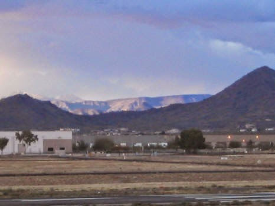
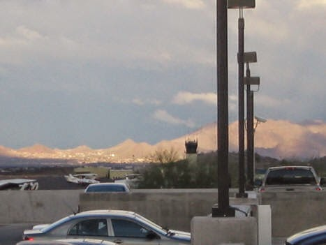
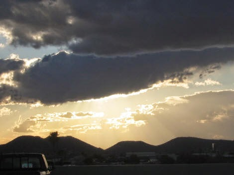

Recovered weblog entry
Share and enjoy, share and enjoy...
Just a short entry today. To make up for it, however, I'm providing pictures for your viewing enjoyment.
I'm already looking at the 11:00 hour as I write this. Tuesday is the longest day of the week for me, with school and all. And for whatever reason, class just crawled by tonight. It was all I could do to keep from looking at the time.
There was a short unanticipated rain storm today in the valley. When I left work at six, the clouds were barely breaking and the sun was shining in the best way imaginable. The pollution had all been swept away; every mountain range within 100 miles was clearly visible with the orange sunlight casting textures upon them.
I tried to take a few pictures to summarize what I saw. Share and enjoy!


